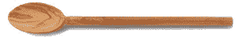
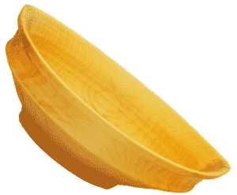

Please come and see my new studio.
Same Building Fourth Floor
Here I create the wooden bowls, goblets, etc. I turn on my lathe. I also carve spoons, butter spreaders and other items. 
Most of the wood I use is green (fresh cut, wet) which accounts for the exotic, somewhat asymmetrical shape many of my bowls take. As the wood dries it changes shape and almost magically becomes what it wants to be. I use mostly local wood; branches being trimmed by the city or trees damaged or blown down in a storm that need to be taken out. Friends and acquaintances also bring me odd and interesting pieces. I am a Salvage Artist because I salvage pieces of wood destined for the chipper and give them new life as pieces of art that are beautiful and utilitarian.
For the painted bowls I use milk paint, casein based paints that are food safe. I use organic linseed oil, beeswax or walnut oil to finish my bowls, drink ware and eating utensils, no petroleum products or harmful chemicals. These natural, organic finishes have been used for hundreds of years and proven food safe.
My bowls have many uses besides holding food. They can also be used to hold pocket change, jewelry, keys and other small items, not to mention just beautifying a room.
